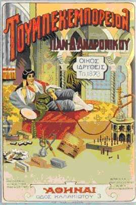

| Δραστηριότητα 3 |
 Αυτή είναι μια αφίσα καπνεμπορικού οίκου, που ιδρύθηκε το 1873 με έδρα την Αθήνα.
Παρατήρησε λεπτομερώς τι δείχνει η αφίσα (το πρόσωπο που εικονίζεται, το ντύσιμο, τη διακόσμηση του χώρου, τα αντικείμενα) και προσπάθησε να τη μελετήσεις ως ιστορική πηγή της εποχής.
Τι πληροφορίες κοινωνικού περιεχομένου μπορείς να αντλήσεις;
Σε ποιες γεωγραφικές περιοχές παραπέμπει η φωτογραφία της αφίσας; Σε ποιες πόλεις θα μπορούσε να είχε αναρτηθεί;
Σε ποιο «καταναλωτικό κοινό» δείχνει να απευθύνεται; [πρόσεξε το φύλο αλλά και την κοινωνική τάξη που υπαινίσσεται].
Αναζήτησε από ποια ξένη λέξη προέρχεται η επιγραφή «Τουμπεκεμπορείον» και πώς θα «μεταφραζόταν» στα ελληνικά.
Αναζήτησε πηγές (λογοτεχνικά κείμενα, εφημερίδες και περιοδικά) που θα σε βοηθήσουν να γνωρίσεις τη γλώσσα της εποχής. Ποιοι παράγοντες πιστεύεις πως επηρεάζουν την καθομιλουμένη γλώσσα κάθε εποχής;
|